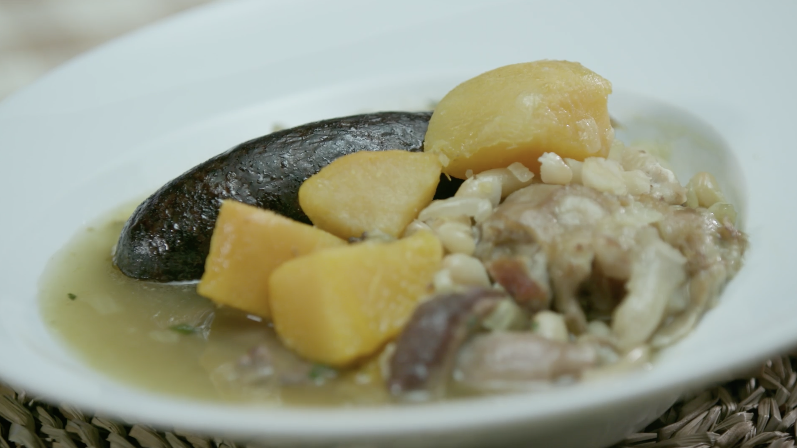
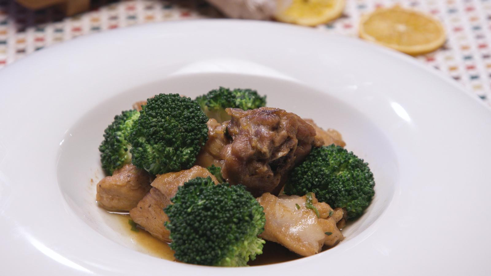
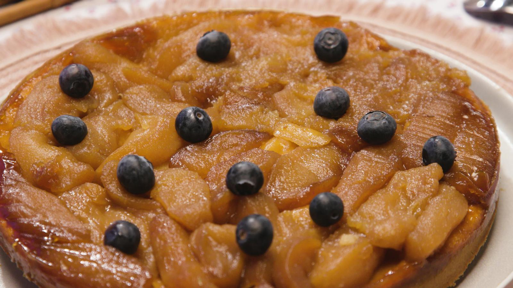
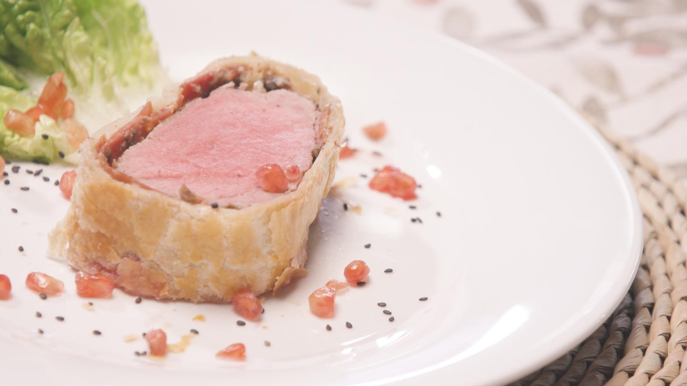
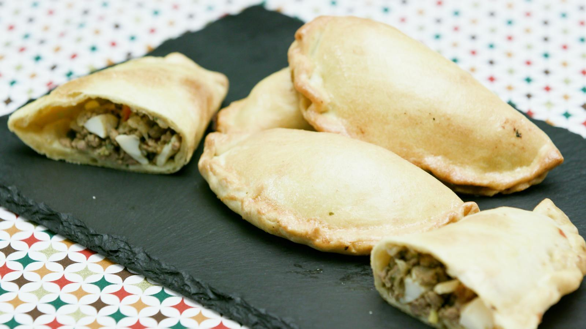

Okonomiyaki

Si parlem de cuina japonesa, ens venen al cap el sushi o el ramen, però hui cuinarem okonomiyaki, un dels seus plats més curiosos, semblant a una truita, i que s’està fent molt popular també.
Olleta de músic
Hui cuinem “Olleta de músic”, l’olleta alcoiana per excel·lència. Un plat d’aquells que es diu “reconfortant”, i que comporta una bona càrrega d’energia, imprescindible, sobretot, en festes de Moros i Cristians.
Gallina Teodomir
Explorarem una recepta que combina la tradició i la delicadesa: la gallina Teodomir. Este plat té una història rica que el fa únic, el toc especial de les espècies. Cuinarem sense pressa… amb xup-xup i amb gust.
Pastís Tatin
Mamprenem una recepta que va nàixer d’un error, com moltes grans creacions de la cuina, però que amaga un truc que la fa única i que es va convertir en una icona. El protagonista és el pastís Tatín.
Okonomiyaki
Si parlem de cuina japonesa, ens venen al cap el sushi o el ramen, però hui cuinarem okonomiyaki, un dels seus plats més curiosos, semblant a una truita, i que s’està fent molt popular també.
Rellomello Wellington
Prepararem una recepta especial i molt vistosa que deixarà tot el món impressionat: rellomello Wellington. Un plat amb pasta fullada cruixent, pernil i una salsa cremosa de xampinyons i conyac.
Empanades argentines
Cuinem la versió de La cuina de Morera de la recepta més internacional d'Argentina: les empanades de carn, que resulten ben diferents dels pastissets o coquetes tancades que fem per ací.